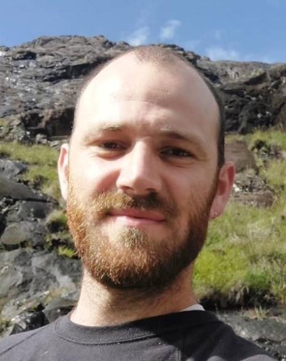

Postdoctoral Researcher · University of Bath
Exploring mathematically driven robotic mechanisms to better understand ourselves.
My research spans tactile sensing, dexterous manipulation, swarm robotics, and machine learning — with a particular focus on assistive technology for visually impaired people. I completed my PhD at Bristol working across the Dexterous Manipulation and Soft Robotics research groups, and am currently part of the ARIA Robot Dexterity programme at the University of Bath.
Alongside academia I explore nature, music, food, and any other pursuit I find enriching.
Exploring the use of waves to control in-hand manipulation